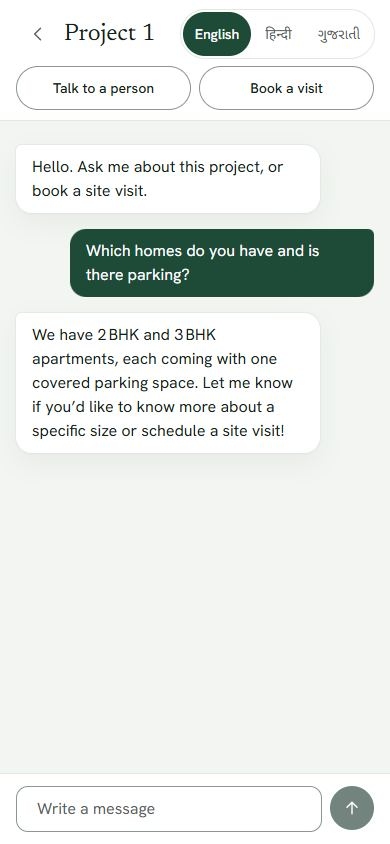
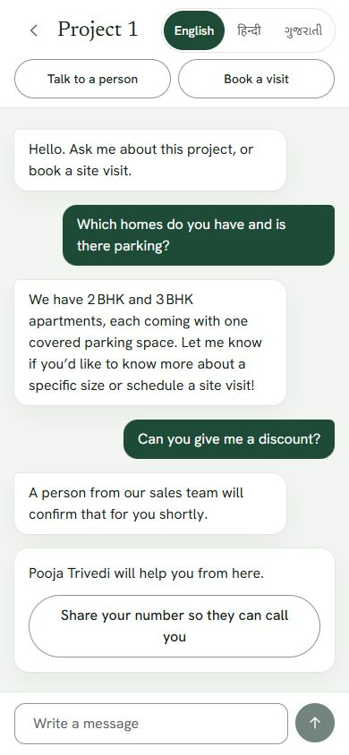
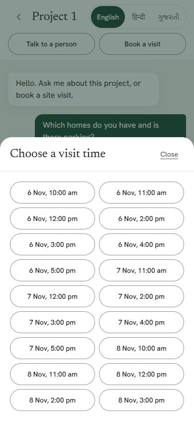
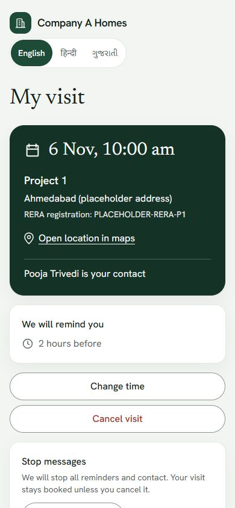
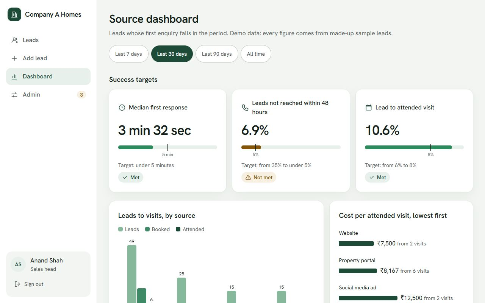

head@companya.example, password demo-sitevisit-2026
Technical design document for brief 2: the AI lead-response and site-visit booking assistant for Company A, Ahmedabad.
Anything the brief did not state is marked [A1] and so on, and listed in section 8. AI assistance was used throughout, as the brief allows.
Company A pays ₹1,000 for each of 3,000 leads a month. Its 11 sales staff leave 35% of them unreached after 48 hours, and 6% end in a visit. The targets are a median first response under 5 minutes, under 5% unreached at 48 hours, and 8% lead-to-visit.
The app has two sides. A buyer chats in English, Hindi or Gujarati, gets answers from the sales head's fact sheet, books a real free slot and can reach a person at any time. Sales staff get a lead list with a duplicate check, handoffs with a chat summary, and show-up recording. The sales head also gets a source dashboard, flagged chats to review, and editors for the fact sheet and visit times.
| Choice | Why |
|---|---|
| One Next.js app | One person and seven days. Screens and logic deploy together, with no separate API service to run. |
| Postgres, with rules in the database | The hard requirement is no double booking under concurrent requests. Partial unique indexes guarantee that in a way application code cannot. |
| Own tool loop, no agent framework | About the size of a small file, and every step that can affect a booking is visible and testable. |
| Free model chain | The project must be free to run. A chain also means one model's limit or outage does not stop the chat. |
| App and database both in Singapore | The app first deployed to the US by default, which put every query across the world. Singapore is Neon's closest region to Ahmedabad. |
| Table | Holds | Important rules |
|---|---|---|
users, sessions | Staff with a role (executive or sales head) | Passwords and session tokens stored only as hashes |
projects, facts | Projects with RERA number; the fact sheet | A fact with no project applies to both |
leads | Name, phone, source, needs, status, owner, consent and opt-out times | duplicate_of_id links repeats; public ID is LD- plus the id |
slots, visits | Visit times; bookings and their outcome | Unique indexes: one booked visit per slot and per lead |
conversations, chat_messages | Chats, handoff summary, flags; messages and withheld drafts | Cookie token stored as a hash; drafts are staff-only |
otp_codes | Buyer sign-in codes | Hashed, with attempts and an expiry |
messages | Simulated outbox: confirmation and two reminders | Recorded and shown to staff, never sent |
rate_limits | Counters | Keys are hashed, so no phone or IP is stored |
A buyer can ask for a person at any time, and the assistant hands off when it cannot answer. The lead goes to a named executive, whose lead page shows a summary of the chat.
Executives see only their own leads; the sales head sees all. Adding a lead warns about a matching phone number and can save it as a linked duplicate that stays with the same executive. After a visit's time passes, staff record Visited or No-show, and can correct it. Staff can also record a phone opt-out.
The dashboard shows the three targets, then leads, bookings, attended visits, response time, unreached share, show-up rate and cost per attended visit by source. The sales head reviews flagged chats daily and edits facts and visit times. Changes to facts reach the assistant on the next message.




Each message runs a small tool loop. The model sees the fact sheet, the conversation and four tools: get_free_slots, book_visit, save_buyer_needs and handoff_to_human. Slot cards and handoff cards are drawn from the database, not from the model's text. Names and phone numbers are never sent to the model, and any number typed into the chat is removed first.
The chain is openai/gpt-oss-120b, then qwen/qwen3.8-27b on Groq, then gemini-3.1-flash-lite. Each call has 12 seconds, over two passes.
| Situation | What happens |
|---|---|
| Fact not on the sheet | The instructions tell it to say a person will confirm and to hand off |
| Reply has a number no tool or fact gave, or a price, discount or offer claim | The check in code withholds it. The buyer gets a safe reply and a named person. The chat is flagged, and the sales head sees the draft |
| Reply leaks raw JSON, tool names or slot IDs | Withheld the same way |
| Promises that a person will follow up | The check spots the promise and makes a real handoff, so it is kept |
| Says a visit is booked | A booking only counts when the confirmation card appears, and that card comes from the database. The check has no specific rule for this wording, so the card is the proof, not the text |
| All models down or rate limited | A fixed reply in the buyer's language, plus the booking and person buttons, which never need the AI |
The check fails safe: when in doubt, it withholds. That means an occasional correct reply is withheld, which costs a handoff but never misleads a buyer.
A script (scripts/eval-chat.ts) runs scripted conversations against the real models.
| Run | Result |
|---|---|
| Three models compared, 15 conversations each | gpt-oss-120b 15 passed; qwen3.8-27b 13 passed, both failures in booking; a smaller model 12 passed, with raw JSON and wrong language, so it was dropped |
| Default chain after hardening, two runs of 15 | All passed, median reply 1.7 seconds, one correct reply withheld in each run |
| Hindi and Gujarati conversations | 8 of 8 passed |
| Forcing a switch to the backup | The main model 4 of 4; Qwen 3 of 4, and it failed "picks a time" twice overall, so it cannot be trusted to book by chat. The booking button still works |
Gemini never answered in any test, because the available key returns a 403 billing error. It is in the chain but unproven, and the app works without it.

scripts/forged-requests.ts makes 152 checks against a running production build: bad JSON, wrong types, oversized bodies, missing cookies, and forged server actions as an executive on another's lead. The database was unchanged afterwards.Buyer question, discount handoff and booking through to My visit; staff sign-in, show-up recording, dashboard, admin screens; times and chat in Hindi and Gujarati at phone size. No page errors were logged.
DEMO_SHOW_CODES=yes, anyone can sign in as any phone number and see that lead's visit. This is acceptable only because the data is made up. A real SMS provider must replace it before real use.Everything here is my own decision or placeholder, not from the brief.
| # | Assumption |
|---|---|
| A1 | RERA numbers, addresses and map pins are placeholders, since the brief gives none. |
| A2 | Parking, amenities and visit hours on the fact sheet are invented sample facts, for the sales head to replace. |
| A3 | ₹1,000 per lead applies to every source. The dashboard says real spend per source is not recorded. |
| A4 | The same phone is one person, costed once under their first source. Repeats are shown separately. |
| A5 | "Not reached" means no reply by 48 hours, or a reply after that. A lead under 48 hours old with no reply is left out until it counts either way. |
| A6 | Lead-to-visit is attended visits divided by people. Show-up rate is visited divided by visited plus no-show, leaving out cancelled visits. |
| A7 | If a visit's time has passed with no outcome recorded, rebooking marks it as a no-show. Staff can correct it. |
| A8 | Consent is optional when staff add a lead, with a "Record consent" action later, but booking needs it. |
| A9 | Staff cannot lift an opt-out; only the buyer's own consent does. Duplicates inherit an opt-out, and a recorded opt-out covers every lead with that phone. |
| A10 | Reassigning a lead moves all leads with that phone, so a buyer has one executive. |
| A11 | A lead cannot be closed while it has an upcoming visit. |
| A12 | Buyer identity is checked with a code, simulated on screen here. |
| A13 | The client IP comes from x-forwarded-for, which Vercel overwrites. On a bare server it could be faked, though phone and account limits still hold. |
| A14 | Sample names beyond the three in the brief, the four staff logins and all dashboard figures are made up. |
| A15 | Project photos show other buildings and are labelled as samples. |